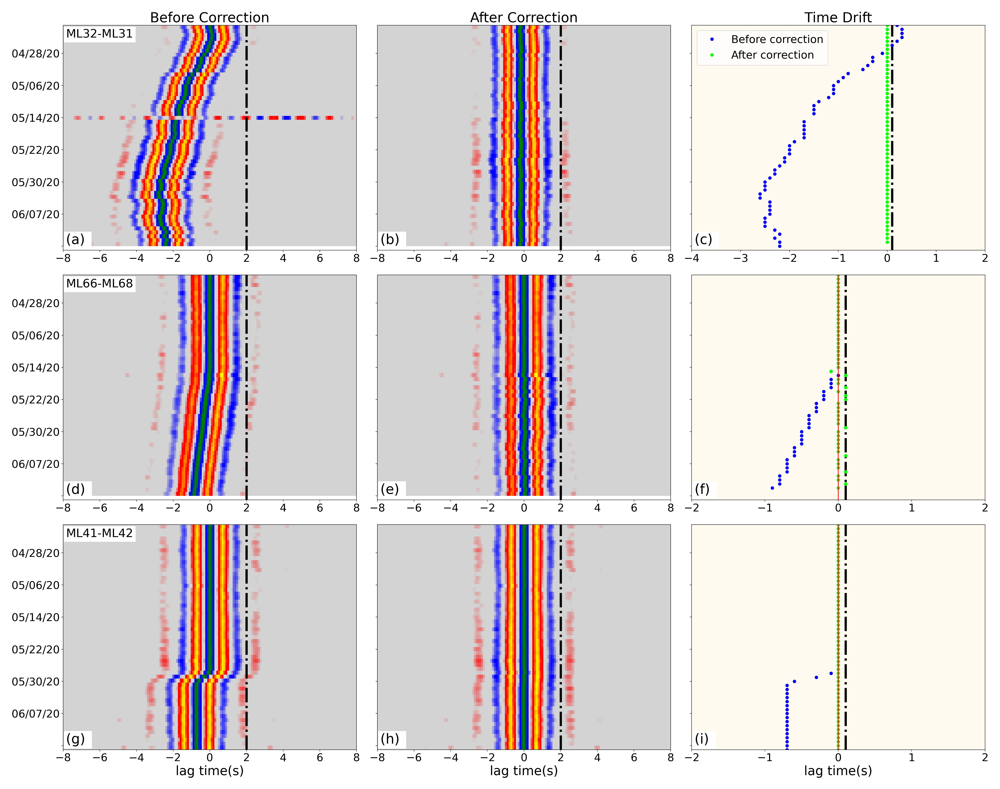
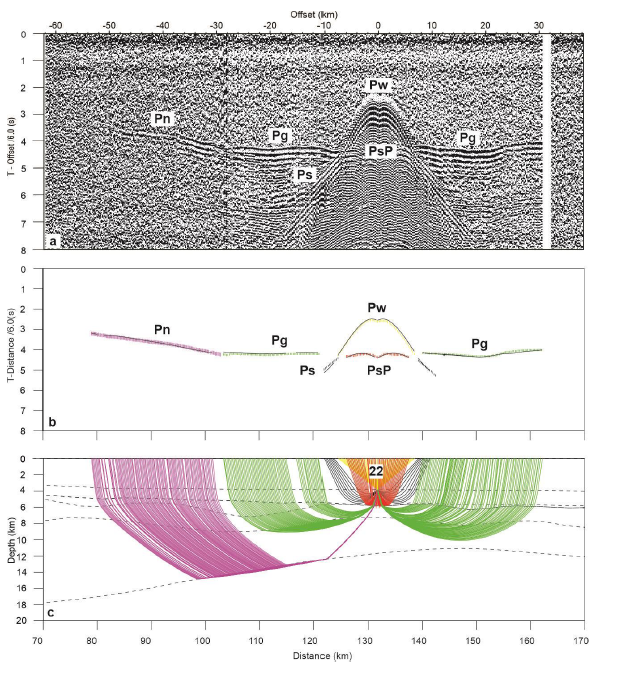
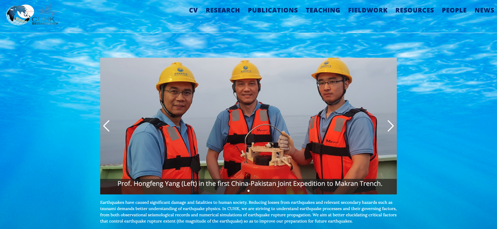
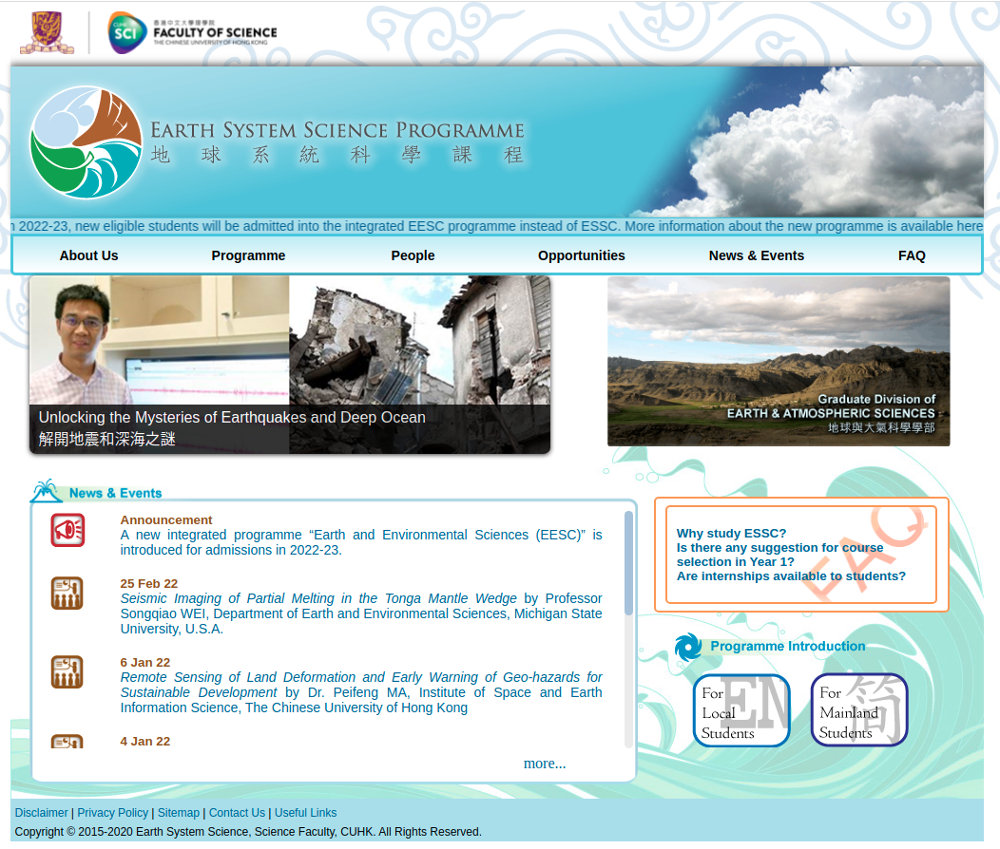
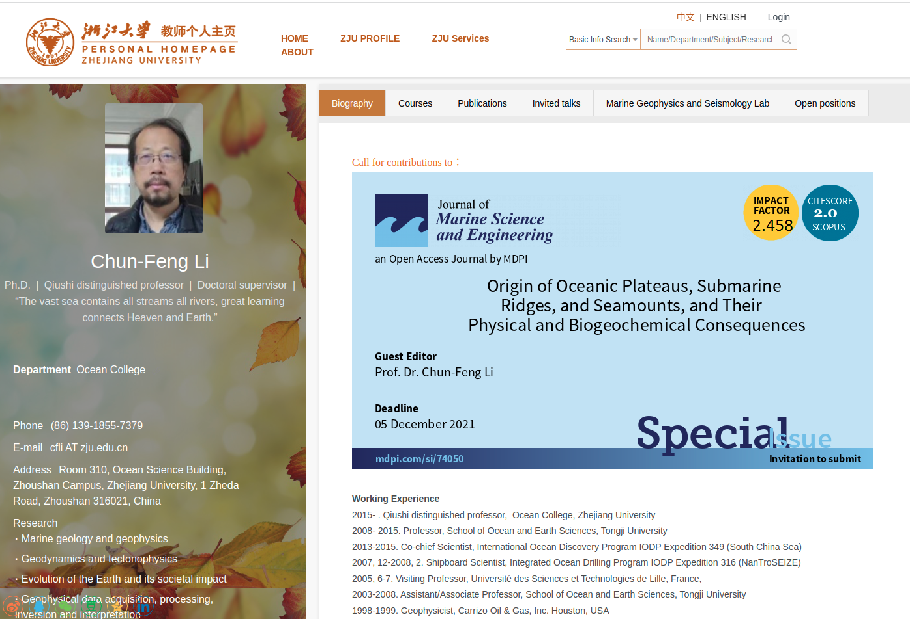
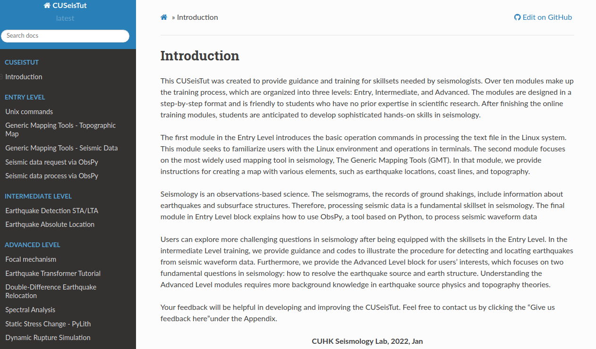

Aqeel Abbas
I am a postdoctoral researcher at the Shenzhen Research Institute,
The Chinese University of Hong Kong. I completed my Ph.D. in Earthquake Seismology at
The Chinese University of Hong Kong
in September 2024. My research focuses on induced seismicity, waveform-based earthquake analysis,
seismic attenuation, ambient-noise interferometry, and clock-drift inspection and correction for temporary
seismic arrays. My current work focuses on fluid-induced earthquakes and dense-array observations in the
Sichuan Basin, China.
More information is available in my resume, Google Scholar, and LinkedIn profiles.
More information is available in my resume, Google Scholar, and LinkedIn profiles.
Research Projects

Induced Earthquakes and Fluid-Driven Seismicity
Hydraulic fracturing can change local earthquake productivity and provides an opportunity to image
crustal heterogeneity, reservoir structure, and fluid-injection effects. My work combines dense-array
waveform analysis, high-resolution earthquake catalogs, relocation, attenuation measurements, and
waveform-based indicators to understand induced seismicity in the Weiyuan shale gas field, Sichuan Basin.

Clock-Drift Inspection and Correction in Seismic Data
Temporary seismic deployments are valuable for earthquake monitoring, but timing problems can reduce
the reliability of waveform analysis. I use local earthquakes, teleseismic waveforms, and ambient-noise
cross-correlation functions to diagnose and correct timing offsets in land and ocean-bottom seismic data.
This work supports robust earthquake detection, association, relocation, and waveform interpretation.

Ocean-Bottom Seismic Data Processing and Crustal Structure
I have worked on ocean-bottom seismic and multichannel seismic datasets from the northern South China Sea
to study lithospheric rifting, transitional crust, and lower-crustal high-velocity structures using forward
ray tracing and travel-time tomography.
News and Useful Links


Postdoctoral researcher, Shenzhen Research Institute, The Chinese University of Hong Kong.
Research focus: induced seismicity, dense-array seismology, ambient-noise analysis, and clock-drift correction.
Research code and repositories
Research Links



